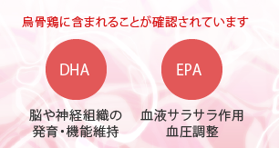
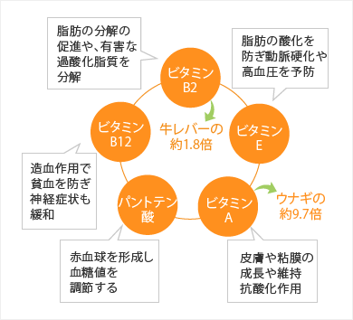
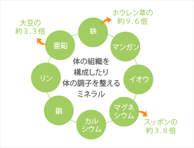

烏骨鶏の栄養価
DHAとEPAを含有
烏骨鶏の骨髄や卵には、血液をきれいにしてくれるＤＨＡ(ドコサヘキサエン酸)、ＥＰＡ(エイコサペンタエン酸)などが含まれています。
これらはともに高度不飽和脂肪酸とか多価不飽和脂肪酸と呼ばれる脂肪を構成している物質のことで、人間の体内では合成することができないため、外から食品として摂取しなければならない必須脂肪酸です。ＤＨＡやＥＰＡは長い間、海産物にしか含まれていないとされていました。

ところが平成３年、（財）日本食品分析センター（本社・東京）による分析の結果、烏骨鶏にも含まれていることが確認されました。 現段階では、陸上に住む動物では初めての発見です。純血種の烏骨鶏が頭に良いと言われてきた所以です。
豊富なビタミン群 ～健康と美容に～

烏骨鶏には各種ビタミンが豊富に含まれています。 特にビタミンＡはその宝庫と言われるウナギと比較して約９.７倍にもなります。ビタミンＡは上皮保護ビタミンとも言われ、皮膚や粘膜の成長や維持に欠かすことの出来ないビタミンです。視覚、聴覚、味覚などの機能維持にも重要な働きをしています。 またすぐれた抗酸化作用のあることが分っており、ガンや成人病の原因とされている過酸化脂質の生成を防ぐ効果があります。さらにビタミンＡの化合物であるレチノイドに肝臓ガンを予防する効果のあることが確認されています。
次に美容ビタミンと言われているビタミンＢ2は牛レバーの約１.８倍含まれています。Ｂ2は、脂肪の分解の促進や有害な過酸化脂質を分解し、体内成分の合成と分解に関係する最も基本的な働きをします。それが皮膚毛細血管の保護や脂質代謝改善につながります。潤いのある美肌、血色のよい唇、黒く輝く瞳などにはすべてこの働きが作用しています。これが不足するとニキビや吹き出物をはじめ、目や鼻、口の周囲などにトラブルが起こるわけです。
そのほかに、造血ビタミンと言われるビタミンＢ12、脂肪の酸化を防ぎ動脈硬化や高血圧を予防するビタミンＥ、赤血球を形成し血糖値を調節するパントテン酸などがバランスよく豊富に含まれています。
ミネラルの宝庫 ～現代人のミネラル不足を解消～

微量元素であるミネラルは、烏骨鶏を語る上で、とても重要な事柄のひとつです。
最近、問題になっているのが現代人のミネラル不足です。
亜鉛、鉄分、銅、マグネシウム、カルシウム、リンなど人体構成に不可欠なミネラルが子供から大人にいたるまで基本的に不足していると言われています。その理由は食生活の変化や運動不足などの生活習慣の変化、さらにはストレスによる胃腸障害などさまざまです。
なかでも、食生活の変化が一番大きな原因として考えられていて、例えば、イワシの丸干しや煮干、大豆、ひじき、しじみ、切り干し大根、ゴマといった伝統的な日本食が敬遠されているところに問題があります。
そのために基礎体力の不足、病気に対する抵抗力や記憶力の低下、疲労の蓄積、冷え性や貧血といった症状、また国民病ともいえる糖尿病などの生活習慣病、さらには性ホルモンの異常による男性のインポテンツや女性の不妊症の増加など、さまざまな現象が起こっています。
烏骨鶏のミネラル成分には、鉄や亜鉛をはじめリン、銅、カルシウム、マグネシウム、イオウ、マンガンと多彩です。 中でも鉄分はホウレン草の約９.６倍、亜鉛は大豆の約３.３倍、マグネシウムはスッポンの約３.８倍と突出しています。 現段階では、陸上に住む動物では初めての発見です。純血種の烏骨鶏が頭に良いと言われてきた所以です。
アルカリ性食材 ～卵・肉・骨 すべてがアルカリ性～
烏骨鶏は動物性食品でありながらアルカリ性食品です。
私たちの食生活は、肉類中心の食事や塩分の過剰摂取、野菜不足などが原因で血液が酸性に傾きがちです。体が酸性体質になると慢性疲労、脱力感、女性の場合は肌荒れの原因にもなります。さらに酸性食品や高脂肪食品の過剰摂取によって、さまざまな病気の原因とされています。
烏骨鶏の卵はカルシウム、マグネシウム、鉄、亜鉛などのミネラルはもちろん、リノール酸、リノレン酸を多く含んでいます。 さらにEPA、DHAを他の卵と比較して多く含んでいます。このEPA、DHAには、コレステロールや血圧の低下、脳、視神経系の維持改善、頭を良くするといった働きが確認されています。